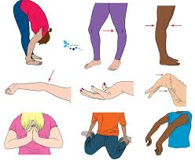

¿Qué es el Síndrome de Ehlers-Danlos Hipermóvil? ¿Por qué es una problemática?
El Síndrome de Ehlers-Danlos Hipermóvil (SEDh) es una de las múltiples variantes del Síndrome de Ehlers-Danlos, un grupo de trastornos hereditarios del tejido conectivo. Se caracteriza principalmente por la hipermovilidad de las articulaciones, la elasticidad de la piel y la fragilidad de los tejidos.
Esta guía está diseñada para proporcionar una comprensión clara de lo que significa ser hiperlaxo, las comorbilidades asociadas y las posibles causas de este síndrome.
La falta de reconocimiento y diagnóstico temprano del SEDh puede llevar a complicaciones de salud significativas. Muchas personas con hiperlaxitud no son conscientes de su condición ni de las comorbilidades que pueden acompañarla, lo que a menudo resulta en un tratamiento inadecuado o inexistente.
¿Es necesario cumplir con todos los puntos de hiperlaxitud?
No es necesario cumplir con todos los criterios de hiperlaxitud extrema, como la capacidad de doblar los dedos de manera inusual o tocar las palmas de las manos en el suelo sin doblar las rodillas, para ser considerado hiperlaxo o tener el síndrome de Ehlers-Danlos hipermóvil (SEDh).
La hiperlaxitud y el SEDh son condiciones que pueden variar significativamente entre las personas. Aquí hay algunos puntos clave para entender mejor:
Hiperlaxitud
Escala de Beighton: Esta es una herramienta comúnmente utilizada para evaluar la hiperlaxitud articular. La escala incluye varias pruebas, como tocar las palmas de las manos en el suelo sin doblar las rodillas, extender el codo más allá de 10 grados, y doblar el pulgar hacia el antebrazo.
Puntaje de Beighton: Un puntaje de 4 o más en esta escala indica hiperlaxitud. No es necesario pasar todas las pruebas, ya que un puntaje total es lo que se considera.
Variabilidad: Algunas personas pueden tener hiperlaxitud solo en ciertas articulaciones y no en otras.
Síndrome de Ehlers-Danlos Hipermóvil (SEDh)
Criterios de Diagnóstico: El diagnóstico de SEDh no se basa únicamente en la hiperlaxitud. Incluye una combinación de factores clínicos, históricos y a veces genéticos.
Historia Familiar: La presencia de hiperlaxitud o SEDh en la familia puede ser un factor.
Síntomas Asociados: Incluyen dolor crónico, luxaciones articulares frecuentes, piel suave y elástica, y problemas de cicatrización.
Evaluación Clínica: Un reumatólogo o genetista puede evaluar los síntomas y la historia clínica en conjunto para hacer un diagnóstico.
Enfermedades Comórbidas
Las personas con SEDh pueden experimentar una variedad de condiciones comórbidas, tales como:
- Síndrome de POTS (Taquicardia Ortostática Postural, prolapso de la válvula mitral, al cerrar inadecuadamente por lo general provoca latidos inconsistentes, no suele ser un problema mayor.)
- Disautonomía
- Trastornos Gastrointestinales
- Dolor Crónico
- Fatiga Crónica
¿Qué Hacer?
Si sospechas que puedes tener SEDh, es importante:
- Consultar a un médico especializado en genética o reumatología.
- Seguir un plan de tratamiento que puede incluir fisioterapia, medicamentos para el dolor y manejo de los síntomas asociados.
- Informarse y conectarse con grupos de apoyo para personas con SEDh.